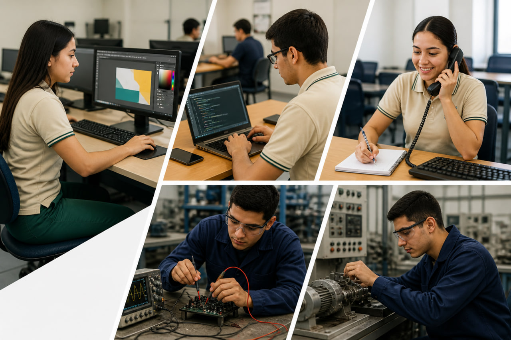
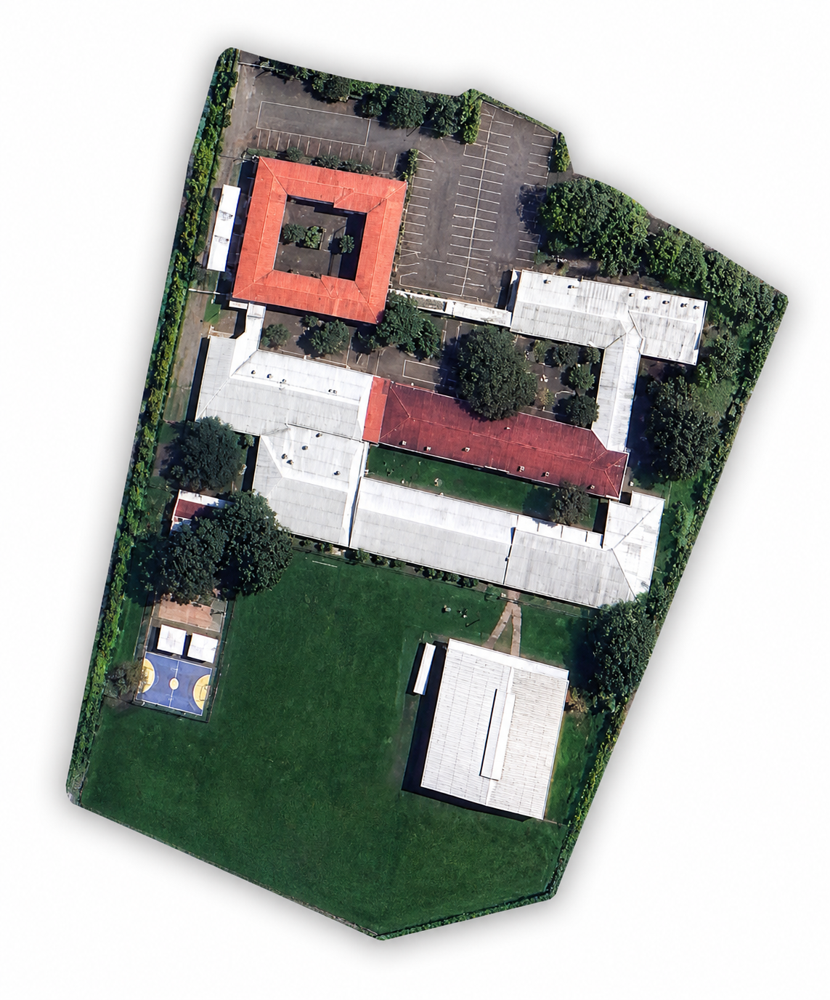
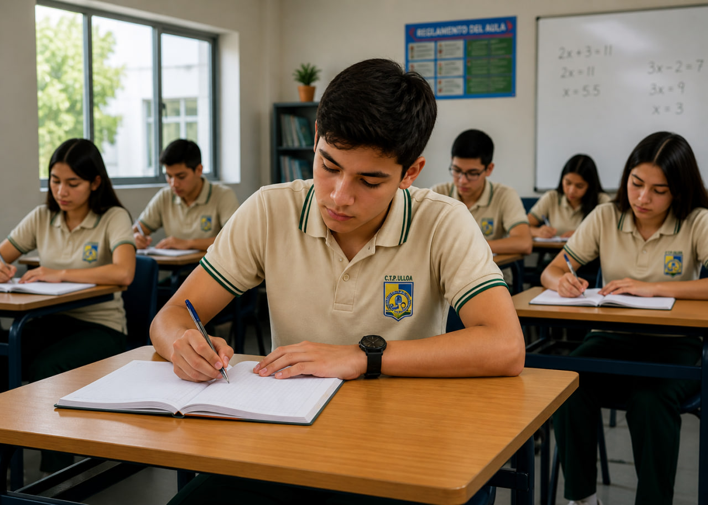
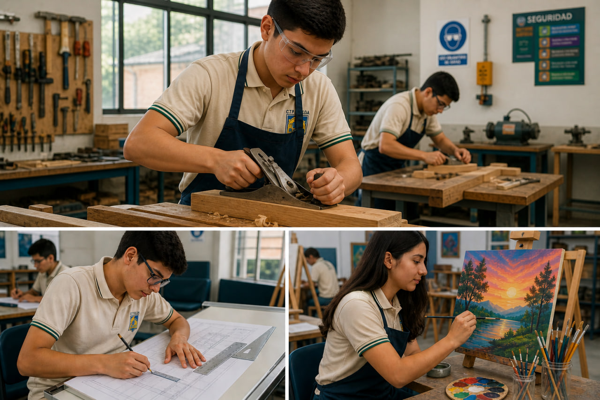

TécnicaEspecialidades técnicas
Áreas comerciales, digitales e industriales orientadas al desarrollo de competencias profesionales y empleabilidad.
Ver detallesColegio Técnico Profesional de Ulloa
Nuestro Colegio

Oferta Educativa

TécnicaÁreas comerciales, digitales e industriales orientadas al desarrollo de competencias profesionales y empleabilidad.
Ver detalles
AcadémicaAsignaturas esenciales del currículo nacional con acompañamiento, orientación y seguimiento del proceso integral.
Ver detalles
IntegralEspacios formativos que fortalecen creatividad, habilidades prácticas, convivencia y desarrollo personal del estudiantado.
Ver detallesContacto